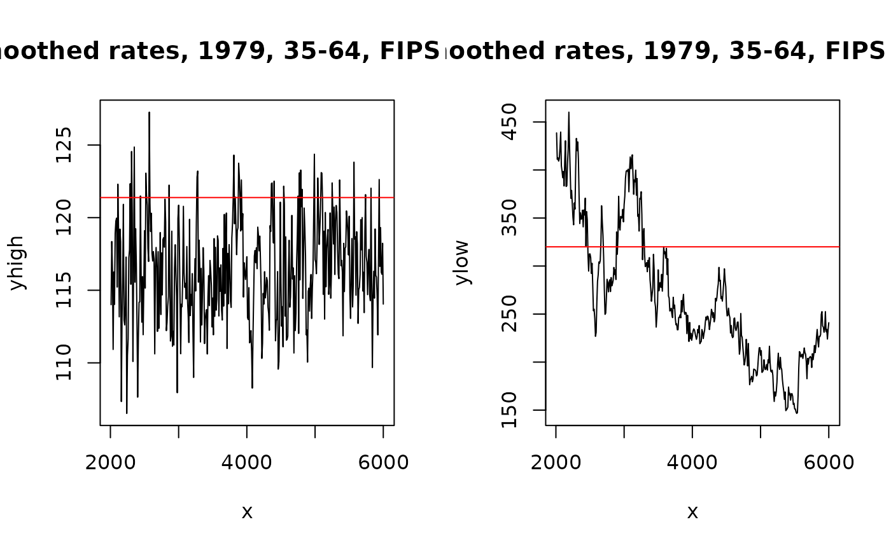

04: Gathering and Loading Samples
RSTr-samples.RmdOverview
After initializing the model with initialize_model(),
you can gather and load samples using the run_sampler() and
load_samples() functions. Finally, using some basic
plotting, we can look at our results and make sure they make sense.
The run_sampler() function
run_sampler() takes in four arguments:
name, dir, .show_plots, and
.discard_burnin. name and dir are
associated wtih the name of the folder that contains the model content
and the directory where that folder lives, respectively.
.show_plots allows you to hide the traceplots generated
while the model runs and .discard_burnin prevents samples
from being saved before the 2000-iteration burn-in period in case the
dataset is particularly large. The information needed to generate the
model is already saved in name, and so
run_sampler() pulls this information in to generate
parameter samples. When running run_sampler(), the R
console will generate outputs describing the batch number, the total
iteration number, and the time when the last batch started. By default,
run_sampler() will generate 6000 samples, but other values
can be specified as desired, rounded down to the nearest 100. For
example, we can begin a simple model and generate samples:
library(RSTr)
initialize_model(name = "my_test_model", data = miheart, adjacency = miadj)
#> Checking data...
#> Checking spatial data...
#> Checking priors...
#> The following objects were created using defaults in 'priors':theta_sd tau_a tau_b Ag_scale Ag_df G_df rho_a rho_b rho_sd
#> Checking inits...
#> The following objects were created using defaults in 'inits': beta theta Z G rho tau2 Ag
#> Model ready!
run_sampler("my_test_model")
#> Starting sampler on Batch 1 at Mon Sep 22 16:19:42
#> Model finished at Mon Sep 22 16:20:06The load_samples() function
Once run_sampler() tells you that the model is finished
running, you can import samples into R using
load_samples(). load_samples() takes in four
arguments:
name: Name of the model;dir: Directory of the model. Saves to R’s temporary directory by default;param: The parameter to import samples for. By default, importstheta. Values forthetaandbetaare expit- or exp-transformed, depending on themethodchosen ininitialize_model(); andburn: Specifies a burn-in period for samples. This allows the model time to stabilize before using samples to generate estimates. By default, has a burn-in period of 2000 samples. Because of the way thatload_samples()utilizesburn, it is safest to choose a burn-in period that is a multiple of 500.
Any dimnames that were saved to data will
be applied to the samples as appropriate. Here, we pull in the
theta samples for our test Michigan dataset with a
2000-sample burn-in period (as specified by the default arguments). We
also multiply by 100,000 as it is common to display mortality rates per
100,000 individuals:
theta <- load_samples("my_test_model") * 1e5Group aggregation
In many cases, we will want to aggregate our data across non-age
groups, such as when looking at prevalence estimates or to simply
consolidate other sociodemographic groups. In our Michigan dataset, we
have 11 years of data over which we can consolidate to look at
prevalence. In these cases, we need to pull in the population array as a
weight. First, we need to check which margin contains our year
information using the dim() function:
dim(theta)
#> [1] 83 6 10 400Our theta array has four margins with dimensions
83, 6, 10, and 400,
representing the spatial regions, age groups, time periods, and
iterations, respectively. Let’s set a variable margin_time
to represent our time period margin and aggregate our theta
estimates across 1979-1988 using the aggregate_groups()
function. The population data needed to weight our samples can be pulled
from the model folder using the load_pop() function:
margin_time = 3
pop <- load_pop("my_test_model")
theta_7988 <- aggregate_groups(theta, pop, margin_time)Now, we have a standalone sample array for our 1979-1988 samples. But
what if we are interested in both the individual year data and the
prevalence data? We can alternatively bind these new samples to our main
theta array by adding in values for the
bind_new and new_name arguments:
theta <- aggregate_groups(theta, pop, margin_time, bind_new = TRUE, new_name = "1979-1988")Age-standardization
The process of age-standardization is similar to that of
group-aggregation, but requires a bit more nuance in its use. In our
Michigan dataset, we have six 10-year age groups that start at age 35
years. We can age-standardize these into a new 35-64 group. Since we are
using data from 1979-1988, we can use 1980 standard populations from NIH
to generate a std_pop vector:
With std_pop generated, we need to then check which
margin contains our age group information using the dim()
function:
dim(theta)
#> [1] 83 6 11 400Our age groups lay along the second margin. Let’s set a variable
margin_age to represent our age group margin and
standardize our theta estimates across ages 35-64 using the
age_standardize() function:
margin_age <- 2
theta_3564 <- age_standardize(theta, std_pop, margin_age, groups = c("35-44", "45-54", "55-64"))We subset theta to only the columns containing our age
groups of interest: 35-44, 45-54, and
55-64 (i,e,. columns 1-3). Note that there may be times
where you have groups stratified by both age and other sociodemographic
groups. In these cases, you’ll have to refactor your sample array so
that the age groups are separated from your other groups before doing
age-standardization, such as using as.data.frame.table() in
conjunction with xtabs().
Now, we have a standalone array for our age-standardized 35-64 age
group. Similarly to aggregate_groups(), we can
alternatively consolidate this into our main theta array by
adding in values for the bind_new and new_name
arguments:
theta <- age_standardize(theta, std_pop, margin_age, groups = c("35-44", "45-54", "55-64"), bind_new = TRUE, new_name = "35-64")Now, our samples for theta are aggregated by year and
age-standardized and we have matching array values for pop.
Note that if you plan on doing a mix of non-age aggregation and
age-standardization, do age-standardization after all aggregation, as
doing age-standardization first will alter the results of any
aggregation done afterward.
Note that the process of age- and group-standardization is identical for both MSTCAR and MCAR models, and that age/group-standardization is not possible for UCAR models.
Traceplots
Before we generate our median estimates for our samples, let’s quickly check some high- and low-population counties to see the stability of the samples:
counties <- c(
which.max(miheart$n[, "55-64", "1979"]),
which.min(miheart$n[, "55-64", "1979"])
)
x <- dimnames(theta)[[4]]
yhigh <- theta[counties[1], "35-64", "1979", ]
ylow <- theta[counties[2], "35-64", "1979", ]
raw_high <- sum(miheart$Y[counties[1], 1:3, "1979"]) /
sum(miheart$n[counties[1], 1:3, "1979"]) *
1e5
raw_low <- sum(miheart$Y[counties[2], 1:3, "1979"]) /
sum(miheart$n[counties[2], 1:3, "1979"]) *
1e5
par(mfrow = c(1, 2))
title_cty1 = paste0("Smoothed rates, 1979, 35-64,\nFIPS ", names(counties[1]))
plot(x, yhigh, type = "l", main = title_cty1)
abline(h = raw_high, col = "red")
title_cty2 = paste0("Smoothed rates, 1979, 35-64,\nFIPS ", names(counties[2]))
plot(x, ylow, type = "l", main = title_cty2)
abline(h = raw_low, col = "red")
This code generates two traceplots representing our sample values over time for a given county-group-year. On the left, we can see a traceplot for the highest-population county, and on the right is a traceplot for the lowest-population county. Each traceplot also includes a red line representing the mean event rate for that county-group-year. Note that in both traceplots, the mean line is nearby the plots, but higher, indicating that the rates in both of these counties were attenuated thanks to spatial smoothing.
The traceplot on the left is exactly what we want to see: it is
clearly fluctuating around a certain value and will give us reliable
estimates for that county. The right traceplot, however, is a bit less
favorable: the value doesn’t seem to want to stabilize and jumps between
values over the course of the model. However, the rate itself is
naturally high, so the intensity of the fluctuation isn’t shocking.
Smaller counties like the one shown here demonstrate the limits of
RSTr: while the samples do hover around a single value for
some iterations, the estimated values we would get for the
county-group-year on the right will not be as reliable as estimates on
the left due to the large variability of the samples gathered. To learn
more about reliability measures, read
vignette("RSTr-medians").
Closing Thoughts
In this vignette, we discussed generating samples with
run_sampler(), importing those samples into R and
age-standardization using load_samples(), and generating
traceplots to get a gut-check on our dataset and the implications of
sporadic traceplots.